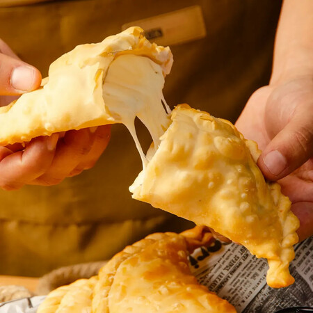

Cheese empanadas

A crispy, golden pastry filled with warm, melted cheese, offering a simple yet irresistible savory bite.
A warm, savory pastry filled with gooey, melted cheese encased in a golden, flaky or slightly crispy dough.
Popular in many Latin American countries, especially Chile and Argentina, it's often deep-fried or baked to
perfection. The rich, creamy filling contrasts beautifully with the crisp exterior, making it a comforting and
satisfying snack or appetizer with every bite.
Ingredients
- 1/2 kilo all-purpose flour (without baking powder)
- 70 grams of pork lard
- 150 ml of liquid milk
- 1 teaspoon of salt
- 1/2 kilo Cheese
Steps
- In a bowl, place the sifted flour along with 1 teaspoon of salt.
- Add the melted lard in the center and begin to add the warm milk, combine the ingredients to form the dough.
- Knead it for 5 minutes to develop the gluten (the dough’s elasticity). After that time, cover the dough and let it rest for 10 minutes.
- Once the resting time is complete, roll out the dough, forming discs about 2 millimeters thick.
- Grate the cheese and fill the dough discs with the mixture. Moisten the edges and fold the dough over. Seal the edges by pressing them with
the tip of a fork. Fry the empanadas in hot oil at 170°C (340°F) for about 3 minutes or until golden brown.
- Remove them from the oil, place them on paper towels to drain, and serve hot.